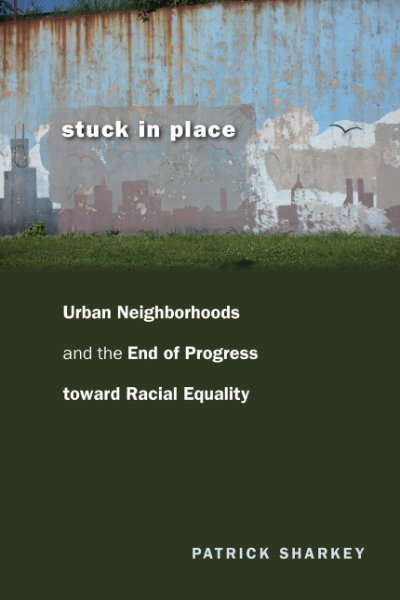
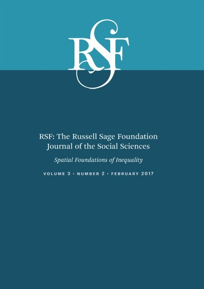
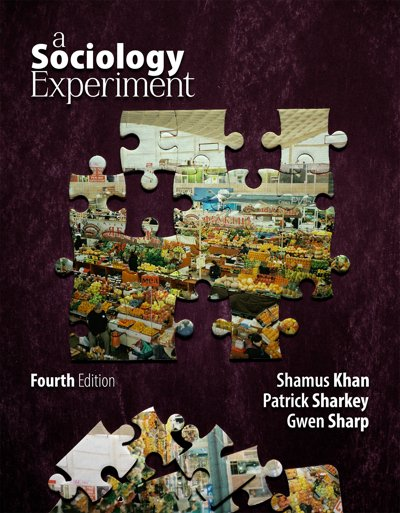

PATRICK SHARKEY
home
cv
books
papers and data
news
Books
Uneasy Peace: The Great Crime Decline, the Renewal of City Life, and the Next War on Violence
W.W. Norton, 2018
Publisher

Stuck in Place: Urban Neighborhoods and the End of Progress toward Racial Equality
University of Chicago Press, 2013
Publisher
·
Awards

Spatial Foundations of Inequality
RSF: The Russell Sage Foundation Journal of the Social Sciences, 2017. Co-edited with George Galster.
Journal issue

A Sociology Experiment
Fourth edition. Co-edited with Shamus Khan and Gwen Sharp.
Website